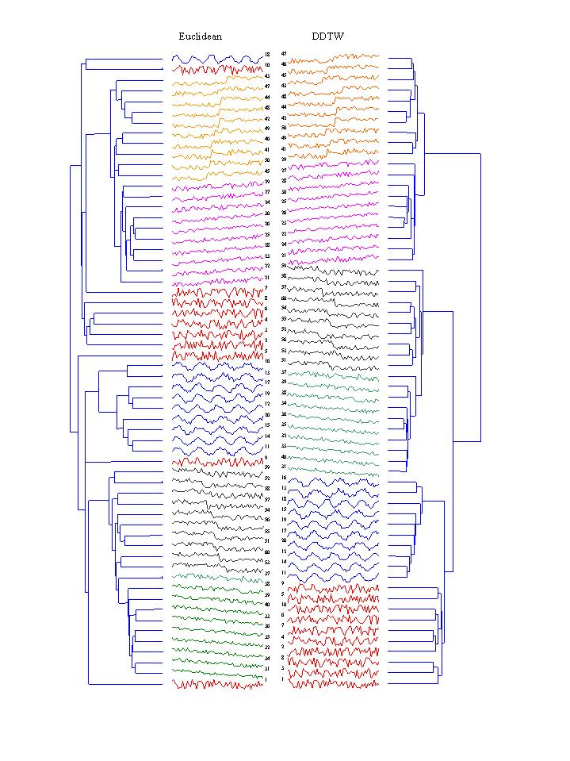

Synthetic Control Chart Time Series
Task Type
clustering
Sources
Donor
Eamonn Keogh
Department of Information and Computer Science
University of California, Irvine
Irvine, CA, 92697-3425
eamonn@ics.uci.edu
Date Donated: June 14, 1999
Problem Description
Analysis Task
Clustering the control charts.
Other Relevant Information
This is a good data set to test time series clustering (and classification)
algorithms because Euclidean distance will not be able to
achieve perfect accuracy. In particular the following pairs of classes
will often be confused (Normal/Cyclic) (Decreasing trend/Downward shift)
and (Increasing trend/ Upward shift).
Results
The following image shows a subset of the results for grouped average hierarchical clustering on this dataset. Each class is represented by a distinct color. The left column shows the results by using Euclidean Distance and the right column shows the results for Derivative Dynamic Time Warping (DDTW, Keogh and Pazzani). DDTW correctly found the six high-level groups, but Euclidean distance did not.

(Green) Downward Trend. (Blue) Cyclic. (Red) Normal. (Yellow) Upward Shift. (Purple) Upward Trend. (Black) Downward Shift.
References and Further Information
E. Keogh and M. J. Pazzani. Derivative Dynamic Time Warping. Technical Report.
The UCI KDD Archive
Information and Computer Science
University of California, Irvine
Irvine, CA 92697-3425
Last modified: June 14, 1999